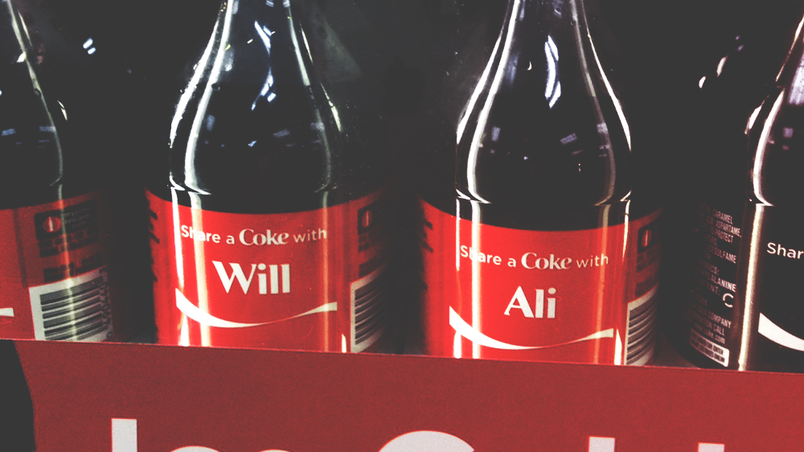

Our story
Perfect Timing...
“For I know the plans I have for you, declares the Lord, plans for welfare and not for evil, to give you a future and a hope.” Jeremiah 29:11
You always read about God’s timing, but when you see Him working in your life, you begin to understand how perfect His plan is. If you had told us two years ago that we were getting married, we would promptly laughed and recommended you be institutionalized. But one Newk’s dinner and a little over a year later, we are here writing our story for you.
Hey, folks, it’s Will here. When you are growing up you always believe that you will find the girl of your dreams. You think you will meet this girl, fireworks will go off, and everything will be perfect. However, as life goes on, that ideal slowly starts to fade, and you begin to believe things don’t really happen that way. Well, let me tell you, Ali was exactly that girl. From the moment we began our friendship there was always something between us. The smiles, the communication we could have with just a look, it all seemed so easy. It was so natural I never gave it a second thought. That was until I had accepted a job in Birmingham and had three weeks until I was leaving Auburn for good. So I decided to go for it.
Hey, y’all, Ali’s turn. Ever since I was a little girl, I would always imagine what my future husband would be like. What would he look like? Did I already know him? What was his name? As a girl, it is easy to get caught up in all the details. But as I was coming to the end of my college years, I was at a point in my life where I thought it best to take a break from dating. Needless to say, I was not looking for a relationship. Will and I have always been good friends, but that is all that it was — a friendship. He previously asked me out just to “catch up,” and I was still on my “I don’t need a man” kick, so I kept him at arm’s length. A little time passed and he asked again. This time, I felt badly for ignoring his first offer so I decided to go. Words really can’t express just how thankful I am that I agreed to dinner. At Newk’s in Auburn, Alabama, I had my very first dinner with my future husband.
The Newk’s date was perfect. Conversation was easy, jokes never stopped, and Ali’s DJ skills were on point. Over the next two months our friendship grew. We took it slowly and became better friends. We discussed our passions in life and, most importantly, our love for the Lord. Finally, just one week before Will moved to Birmingham, we decided to give it everything we had to make a long distance relationship work.
Looking back, it is amazing to see the Lord’s hand through it all. God knew exactly what we needed, and He knew when we needed it. Most all, He knew exactly who we needed. It was one month into our relationship, and we started finding old pictures that until now we hadn’t even given them a second thought. Pictures at football games, Halloween parties, and -- craziest of all -- the picture you see to your left. A year before we started dating, we went on a trip to South Carolina with some friends. We made a quick stop at a gas station for snacks, and we just happened to glance at the bottled Coca-Colas. Right in front were two Coke bottles next to each other — “Will” and “Ali.” Seriously. We didn’t move them. And Ali’s name was spelled correctly. It was right there in front of us. Will and Ali. We laughed, thought it was neat, snapped a picture, and moved on.
Seeing that picture serves as a reminder to us that God’s plan and timing is far greater than we ever imagined. In each other, we found our soulmate. In each other, we found our best friend. We are incredibly blessed that soon we get to start our lives together. For that, we glorify our Father above.
It might not be the best love story, but it’s our favorite..